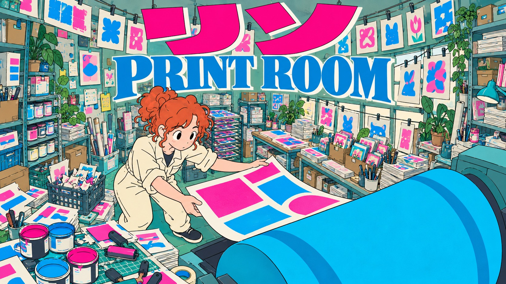
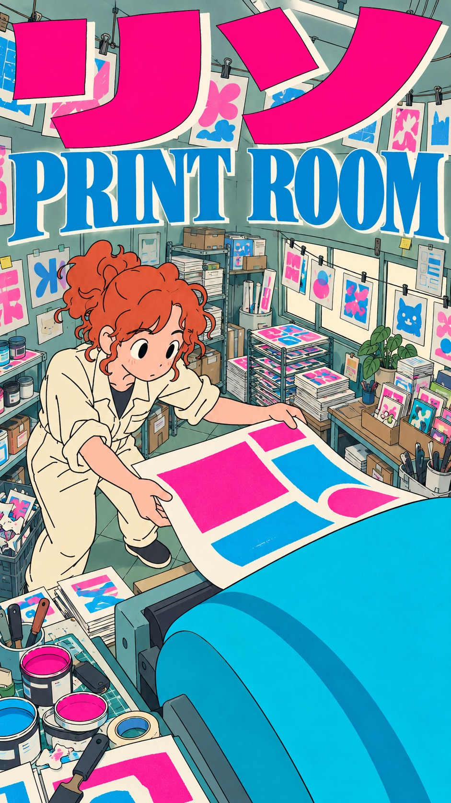
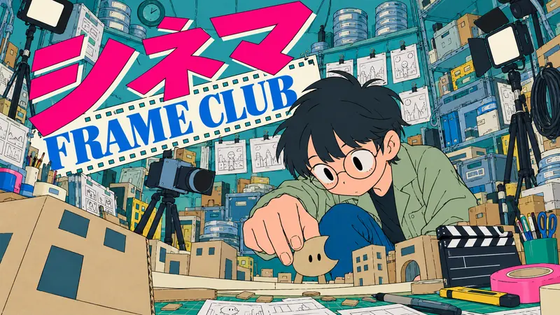
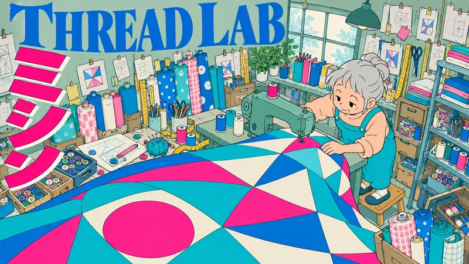
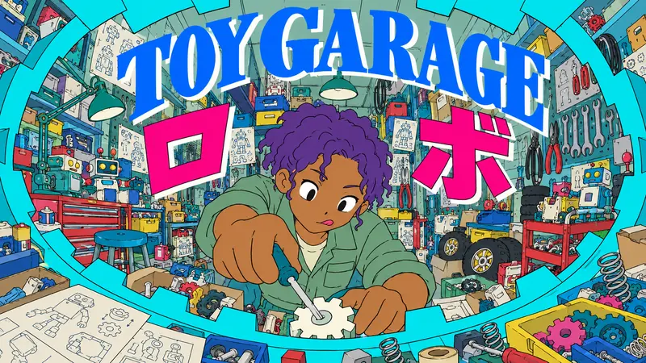

Type Posters · AI image style prompt
Ink Orbit Club
Flat, naive hand-inked maker posters in dense fisheye workshops: cold teal and grey-green rooms, fluorescent pink katakana and bold blue serif mastheads.


4 example cases
Same style.json, different subjects. Each case's values are in the examples section of the JSON.



What this style does
Flat, slightly naive hand-inked maker posters in densely lived-in workshops: cold teal/cyan and grey-green, strong fisheye perspective, fluorescent pink katakana and blue serif top mastheads.
Signature traits
- Keep the original maker characters and craft actions inside a strongly bowed fisheye workshop.
- Use deliberately naive limited-animation drawing: loose uneven thin ink, simple mitten-like plausible hands, oval black pupils, hair as a few solid clumps, and entirely flat unshaded colour fills.
- No optical effects or tonal modeling: no blur anywhere, glow, gradients, volumetric shading, shine, detailed anime features or realistic machinery; every prop uses a few wobbly contours and flat cel fills.
- Use fluorescent pink heavy angular katakana with cool off-white offset edges and a large blue high-contrast serif counter-title.
- Make cold teal/cyan and muted grey-green the dominant room and machinery fields; blue anchors type, pink provides contrast, cool off-white is limited to paper, and warm hues stay local to skin and copper hair.
- Interlock oversize type, curved graphic paper panels and simple foreground craft objects across three planes, with roughly 20 percent calm designed fields.
style.json
{
"schema_version": "2.2",
"style_name": "Ink Orbit Club",
"style_slug": "ink-orbit-club",
"style_summary": "Flat, slightly naive hand-inked maker posters in densely lived-in workshops: cold teal/cyan and grey-green, strong fisheye perspective, fluorescent pink katakana and blue serif top mastheads.",
"environment_variables": {
"ASPECT_RATIO": "9:16 or 16:9",
"STYLE_FIDELITY_ANCHORS": "Inject prioritized style anchors",
"SOURCE_CONTENT_TO_AVOID": "Inject source exclusions",
"SUBJECT": "Original maker, clothing and craft action",
"SCENE": "Camera, scale and workshop objects",
"MAIN_TEXT": "Exact short Japanese headline",
"SECONDARY_TEXT": "Exact English craft-club counter-title",
"DESIGN_DIRECTION": "Theme-led placement and both-ratio recomposition"
},
"style_fidelity_anchors": [
"[CORE] Keep the original maker characters and craft actions inside a strongly bowed fisheye workshop.",
"[CORE] Use deliberately naive limited-animation drawing: loose uneven thin ink, simple mitten-like plausible hands, oval black pupils, hair as a few solid clumps, and entirely flat unshaded colour fills.",
"[CORE] No optical effects or tonal modeling: no blur anywhere, glow, gradients, volumetric shading, shine, detailed anime features or realistic machinery; every prop uses a few wobbly contours and flat cel fills.",
"[CORE] Use fluorescent pink heavy angular katakana with cool off-white offset edges and a large blue high-contrast serif counter-title.",
"[CORE] Make cold teal/cyan and muted grey-green the dominant room and machinery fields; blue anchors type, pink provides contrast, cool off-white is limited to paper, and warm hues stay local to skin and copper hair.",
"[CORE] Interlock oversize type, curved graphic paper panels and simple foreground craft objects across three planes, with roughly 20 percent calm designed fields.",
"[CORE] Fill the lived-in setting close to R1 density with many theme-specific props in overlapping foreground, side storage and back-wall clusters; simplify each object, never empty the scene, while keeping one clear maker face and readable titles.",
"[FLEX] Vary top masthead, upper diagonal, upper-left vertical rail and split upper-half lettering; keep the lower half mainly available for craft action.",
"[FLEX] Vary camera height, character scale and panel shape while keeping simple faces, sparse object interiors and visible theme-driven perspective."
],
"source_content_to_avoid": [
"The teal bob-haired convention vendor, school vest and tie, cross hair clip and hand reaching at the viewer.",
"The winking dark-haired painter, blue apron, neck pillow, brush in mouth and oval palette.",
"Anicket X, indie_, Fallett, YOON JE AN, source wording, source merchandise or existing logos.",
"The original exhibition booth, checkered painter floor and exact source masthead letterforms or layouts; a new large top masthead is allowed."
],
"visual_deconstruction": {
"grammar": "Character-led illustrated creative-culture editorial, distorted intimate workshop, overlapping print and image layers.",
"signature": {
"R1": "Retain pink angular display energy but replace source horizontal wordmark/reaching vendor with craft-linked modular panels and distinct original makers.",
"R2": "Retain large blue serif presence and simple fisheye drawing; combine serif with pink katakana, varied camera heights and craft geometry instead of copying its brand masthead and painter."
},
"fusion": {
"genre_and_hero": "Shared: original anime creative practitioners; no source identities.",
"palette": "R1 supplies dominant cold teal/cyan fields and fluorescent pink; R2 supplies broad grey-green planes and large blue serif type. Cool off-white panels are secondary.",
"finish": "Shared flat cel blocks and imperfect line; R2 supplies deliberately simple almost-doodle figure construction; R1 supplies uneven outlines and local print-edge offset. No polished anime lighting or detail.",
"type": "R1 angular Japanese display; R2 high-contrast Latin serif, transformed from masthead to counter-title.",
"layout": "Both references supply upper masthead prominence; R2 supplies bowed perspective; R1 supplies image/type overlap. New craft-specific panels vary placement.",
"secondary_elements": "R1 printed craft matter; R2 believable workshop objects.",
"balance": "Shared character and palette anchors; R1 dominant type/layering contributions; R2 dominant rendering/perspective contributions. Each visible in every case, no single-source takeover."
},
"energy": {
"density": "Approximately 80–85% active surface and 15–20% calm designed fields, close to R1 lived-in density: many recognizable theme props across foreground, side storage and back wall. Large unmarked walls or windows count as quiet, not active. Separate high object count from low rendering complexity; one clear focal maker.",
"layering": "At least four overlapping planes: near tools/material piles, maker and oversized craft object, stocked side furniture/back-wall ephemera, structural title/paper.",
"disorder": "Slight line wobble and local print offset, restrained paper texture; no generalized grunge.",
"tension": "Dramatic scale, bowed room lines, lettering touching or partly occluded by tools.",
"ink_limit": "Seven main ink families plus local natural skin and copper hair; no orange or cream atmospheric wash."
},
"series_constants": {
"palette": "Cold teal/cyan and grey-green dominate at least half the picture; fluorescent pink katakana; blue serif; limited cool off-white paper; local natural skin/copper hair/violet curls; dark ink contours.",
"light": "Neutral-cool ambient flat illumination; one hard graphic shadow tone, no luminous window or atmospheric depth.",
"layout_kit": "Large pink/blue top title fusion, curved cool off-white tabs or teal panels, layered theme-related printed scraps and storage clusters, oversized craft foreground; title and hero placement remain case-specific."
}
},
"composition": {
"design_layer": "Large type and curved cool off-white/teal panels together 25–35% of frame; a top or upper-half masthead presence in every case.",
"focal_point": "One maker with expressive visible face.",
"ratios": "Recompose according to each case design direction; never crop a portrait into landscape."
},
"typography": {
"primary": "Exact MAIN_TEXT in fluorescent pink angular katakana with thin uneven dark contour and cool off-white offset; exact SECONDARY_TEXT in a visibly large blue high-contrast serif.",
"texture": "Tiny decorative Japanese labels, numerals and process diagrams may be cut, repeated and unreadable.",
"placement": "Three or more arrangements: top horizontal, upper diagonal, upper-left vertical, upper-half split; no majority of titles in lower half."
},
"color_palette": [
{
"hex": "#08AAA9",
"role": "Dominant cold teal/cyan room and machinery fields"
},
{
"hex": "#899F95",
"role": "Broad muted grey-green room and garment planes"
},
{
"hex": "#F50086",
"role": "Fluorescent pink katakana and sparse print accents"
},
{
"hex": "#2383B8",
"role": "Large blue high-contrast serif and secondary cool planes"
},
{
"hex": "#E7EDE3",
"role": "Limited cool off-white paper and title offsets, never warm cream ground"
},
{
"hex": "#D9A59A",
"role": "Local skin only; natural darker skin variation retained"
},
{
"hex": "#273B3A",
"role": "Uneven dark ink contours and flat shadow shapes"
},
{
"hex": "#6B608B",
"role": "Local violet curls or muted shadow"
}
],
"image_treatment": {
"medium": "Naive hand-inked limited-animation cel: sparse irregular contours, crude charming face construction, large single-colour shapes, unshaded objects. No fine rendering or cinematic finish.",
"texture": "Very fine restrained scanned-print tooth; slight fill/line misregistration on local scraps and title offsets. Line wobble and flat colour are primary; no heavy grain, distress, scratches or paper damage.",
"lighting": "Entirely flat neutral-cool colour; omit lighting effects and tonal modeling. Depth comes only from curved perspective lines, overlap and scale. Every foreground and background contour has the same hand-ink clarity."
},
"design_rules": [
"Maintain an original maker and clear craft narrative.",
"Keep both source contributions visible at poster viewing size.",
"Make quiet area a designed cool off-white or teal field; keep most room surface cold teal and grey-green.",
"Use a meaningful visible graphic structure covering about a quarter to a third of frame.",
"Exact primary copy may overlap objects only while remaining readable.",
"Companion ratio preserves story and varies composition.",
"Keep the drawing no more sophisticated than the references: simple faces, flat planes and few interior lines per object even in a crowded workshop.",
"Keep large headline presence in top or upper half in all four placement plans.",
"Populate bowed walls, side shelves and work surfaces with many theme-related objects, tools and printed matter; overlap and crop prop groups naturally, keeping face and primary titles clear."
],
"do": [
"Use strong foreground-to-background scale jumps without optical blur.",
"Keep wobbly sparse line, flat cel blocks and simple slightly naive faces.",
"Let craft geometry vary upper title placement and panel shape.",
"Restore a lived-in prop-rich setting while keeping each object flat and simply outlined; preserve one or two hard shadow tones at most, with no tonal rendering."
],
"avoid": [
"Source identities, costumes or brand lettering.",
"Polished generic anime, complex glossy eyes, fine surface rendering or realistic machinery.",
"Depth-of-field blur, soft glow, bloom, painterly gradients, smooth shading.",
"Warm cream/orange atmosphere or yellow window light.",
"Repeated lower title ribbons, corporate grids, heavy all-over distress.",
"Nearly empty rooms, bare wall/window backdrops, low prop counts, detailed material textures or optical lighting effects."
],
"prompt_template": "Make a {ASPECT_RATIO} FLAT HAND-DRAWN POSTER, with the naive simple drawing sophistication of a small independent cartoon zine. Intentionally simple loose ink outlines, entirely unshaded solid colour fills, slightly awkward charming figures and oval black pupils. No digital rendering or cinematic finish. {SUBJECT} {SCENE} {DESIGN_DIRECTION} Exact words: “{MAIN_TEXT}” and “{SECONDARY_TEXT}”. Huge fluorescent pink angular katakana plus large blue high-contrast serif. Dominant cold teal/cyan and grey-green; limited cool off-white panels; warm colour only in local skin/hair. Strong curved perspective and large scale jumps, all edges equally clear. Energy comes from big type, scale jumps AND a densely occupied lived-in setting close to R1: many theme props in overlapping foreground, side-storage and back-wall clusters, each drawn with just a few wobbly lines and flat fills. Keep one clear focal face and readable titles. About 15–20 percent calm designed fields; do not leave broad empty wall/window areas. Simple rendering does not mean few objects. Anchors: {STYLE_FIDELITY_ANCHORS} Source exclusions: {SOURCE_CONTENT_TO_AVOID}",
"negative_prompt": "photoreal, 3D, polished generic anime, detailed glossy eyes, depth-of-field blur, bokeh, bloom, soft glow, gradients, painterly light, smooth volumetric shading, fine realistic background rendering, empty sparse room, warm cream-orange atmosphere, yellow window light, source identities, copied logos, watermark, QR code, palette painter, school uniform, cross clip, checkered floor, malformed primary glyphs, extra fingers, heavy grunge",
"examples": [
{
"case_name": "rolling-print",
"values": {
"MAIN_TEXT": "リソ",
"SECONDARY_TEXT": "PRINT ROOM",
"SUBJECT": "A curly copper-haired young adult printer in a cream rolled-sleeve jumpsuit catches a curling magenta-and-cyan paper sheet with both hands beside a large rolling press.",
"SCENE": "Curved three-quarter fisheye, maker left-middle, huge cyan rolling-press cylinder lower-right and curling sheets. Fill the print room with skewed paper stacks, ink cans and open lids, spare hand rollers, hanging prints clipped to lines, a drying rack, art-book piles, postcard trays, scrap-paper baskets and stacked paper boxes. Overlapping clusters on foreground worktable, side cart and back wall leave only small wall/window gaps. Every can, stack and tool is a simple flat shape with few uneven lines; no machinery internals.",
"DESIGN_DIRECTION": "TOP HORIZONTAL masthead: huge pink リソ across the top with large blue PRINT ROOM directly below on a cool off-white paper edge; maker left-middle and cyan roller lower-right. Portrait tall paper feed; landscape masthead spans upper width with broad roller sweep. Keep title legible above dense hanging prints and worktable stock."
}
},
{
"case_name": "miniature-cinema",
"values": {
"MAIN_TEXT": "シネマ",
"SECONDARY_TEXT": "FRAME CLUB",
"SUBJECT": "A short dark-haired adult filmmaker wearing round glasses and a sage work jacket crouches on the right, carefully moving a tiny cardboard moon creature among miniature buildings.",
"SCENE": "Low tabletop fisheye with pronounced near-far scale: maker right-middle, large cropped cardboard building in foreground, small moon creature and miniature city stage. Fill around the set with stacked film cans, storyboard sheets clipped across back wall, extra cardboard mini sets, schematic box camera, two simple studio lights on stands, cable coils, tape rolls, clapperboard and prop boxes under the table. Lights are solid flat shapes with no beams or glow. Foreground and distant props remain equally sharp with simple lines.",
"DESIGN_DIRECTION": "UPPER DIAGONAL masthead: huge pink シネマ slopes across upper-left with blue FRAME CLUB on a slanted cool off-white film tab beneath; maker right-middle and miniature city along lower edge. Portrait deep low-angle city; landscape wide city stage and upper-left wedge. Keep the large foreground building and surround the miniature stage with overlapping film-making equipment."
}
},
{
"case_name": "thread-room",
"values": {
"MAIN_TEXT": "ミシン",
"SECONDARY_TEXT": "THREAD LAB",
"SUBJECT": "An older woman with silver hair in a bun, peach sleeves and cyan overalls stands on a low stool guiding a long geometric quilt through a vintage unbranded sewing machine. Keep her visibly older with two simple smile creases and heavy eyelids, drawn with very few strokes.",
"SCENE": "High oblique fisheye: visibly older full figure upper-right on low stool, simple sewing machine, giant geometric quilt sweeping lower-left. Fill the surrounding thread room with many spool groups, upright fabric rolls, folded cloth stacks, pin cushions, scissors, measuring tapes, overlapping pattern sheets pinned to back wall and spread on side table, buttons in trays and open sewing boxes. Props occupy three depths around the quilt and face. Quilt pieces and fabrics stay flat, no weave texture or dense stitches; few strokes per object.",
"DESIGN_DIRECTION": "UPPER-LEFT VERTICAL rail: pink ミシン in three clearly separated characters down the left upper two-thirds; blue THREAD LAB crosswise near upper rail, not at bottom. Maker full figure right-upper-middle, giant quilt sweeps lower-left. Portrait long quilt fall; landscape strong diagonal cloth. Quilt uses large simple geometric pieces and very few stitches; dense sewing supplies surround its edges without covering the maker."
}
},
{
"case_name": "clockwork-play",
"values": {
"MAIN_TEXT": "ロボ",
"SECONDARY_TEXT": "TOY GARAGE",
"SUBJECT": "A dark-skinned adult mechanic with short violet curls and a sage mechanic jacket leans into an enormous hollow circular wind-up toy mechanism, face clearly framed inside it, adjusting a small gear with a plain screwdriver.",
"SCENE": "Extreme low fisheye from inside a giant flat cyan toy gear ring; central face/torso, small gear and screwdriver. Fill the garage visible through and around the ring with stacked parts bins, hanging pliers and wrenches, simple half-built toy robots, spare wheel piles, springs drawn as a few loops, open cardboard boxes, instruction sheets, toy packaging and a rolling tool cart. Near workbench piles overlap ring lower edge, side storage and back-wall tools fill remaining space. Robots are small secondary objects, never competing characters. Ring teeth and every part are simple flat outlined shapes, no realistic internals.",
"DESIGN_DIRECTION": "SPLIT upper-half title: large blue TOY GARAGE alone curves across the very top; a separate pink ロ tab sits mid-left and a separate pink ボ tab mid-right, each beside the face around 35–45 percent frame height. No continuous banner behind the pink characters. Face centered between tabs. Portrait huge tall ring; landscape broad ring and wider separation. Keep full readable glyphs with both dakuten on ボ; workshop stock fills visible wall gaps without masking the face."
}
}
],
"category": "Type Posters",
"style_version": "1.0"
}